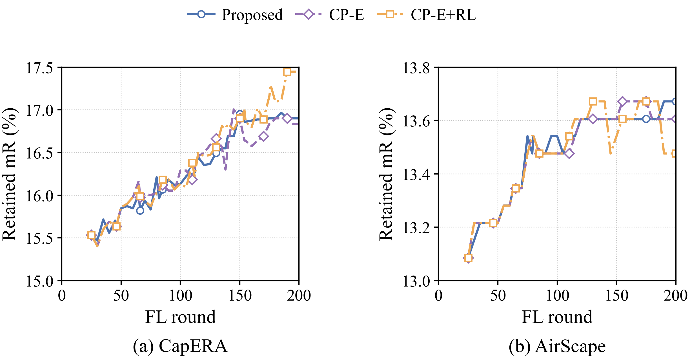
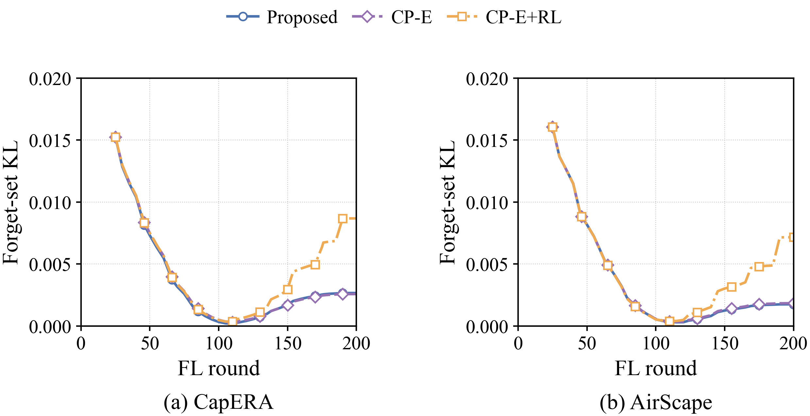

순수 망각 성분을 보호하는 FL/FU 결합
첫 단계 12개 실험 · 전체 CSV · 후속 실험 사전 고정 조건
기존 FU 전체에는 유지 학습도 포함돼 있다. 후속 CP는 순수 망각 F와 유지 R을 분리한다. F는 3FM의 업데이트, R은 FL과 FU의 RM+3CM 업데이트를 합친 것이다. 모두 원래 표본 가중치와 학습률을 포함한다.
R′ = R − min(0, R·F)/‖F‖² × F, 전송 = R′ + F. F가 없으면 기존 FL을 그대로 보낸다. 무선 입력은 L_eff=R′−P와 U=F+P로 표현해 합계 R′+F를 유지한다. 기존 FU 상대 오차 제약은 복합 U를 대상으로 유지하며, 순수 F에 대한 무선 보호 보장은 하지 않는다. 추가 전송 좌표나 encoder 역전파는 없다.
기본 후보는 기존 FU 학습률, +RL 후보는 모든 요청의 FU 학습률을 초기값 0.0035로 유지한다. 둘 다 동일한 200 FL 라운드, 45개 요청×5 FU 단계, seed0, 1MHz를 사용했다. 각 UAV의 방향 보호이며, 서로 다른 UAV의 간섭이나 전체 KL/mR 개선을 보장하지 않는다. 단방향 PCGrad 응용이며 투영 자체를 새로운 발명으로 주장하지 않는다.
이번 결과에서는 mR 유지와 KL 감소를 동시에 달성하지 못했다. CP-E는 CapERA에서 KL을 소폭 낮췄지만 mR이 감소했고, AirScape에서는 KL과 mR 모두 악화됐다. 학습률을 높인 CP-E+RL은 두 데이터셋의 KL을 높였다. 원래 제안법을 대체하는 검증된 개선안으로 채택하지 않는다.
CapERA
AirScape
앞선 탐색 결과를 바탕으로 등록한 후속 가설 실험이다. 같은 검증셋을 사용했으므로 독립 확인 실험이나 테스트 성능 주장이 아니다. 결과에 따라 설정을 다시 고르거나 원래 final_chart를 교체하지 않았다. retrain은 평가에만 사용했다. 에너지는 통신+연산+호버로, 추가 성분 분리와 투영 연산 비용을 모델에 포함했다. 비용은 하드웨어 실측이 아니다. 원시 기록은 별도 압축파일과 해시 목록으로 보존했다.

PDF · SVG

PDF · SVG
방법 참고: CLIPErase (ACL 2025)의 FM/RM/CM 구분과 PCGrad (NeurIPS 2020)의 충돌 방향 투영을 참고했다. 여기서는 UAV 로컬 업데이트에 단방향 투영을 적용했으며, 두 논문의 원래 실험을 재현했다는 의미는 아니다.